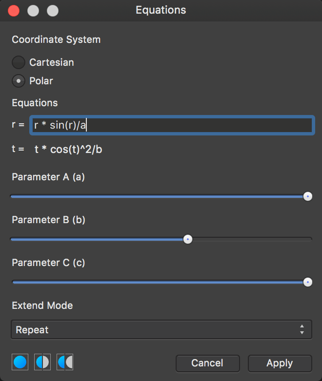

Equations
The Equations filter allows you to apply transform filters through mathematical expressions.


The Equations filter allows you to apply transform filters through mathematical expressions.
This filter allows you to apply a transform to a pixel layer using mathematical expression. You can achieve a number of distortion-type effects through the use of predetermined variables, trigonometry, exponentiation, etc. Additionally, you can use custom variables a, b and c in the equations and control their values through sliders on the filter dialog.
The following settings can be adjusted in the filter dialog:
